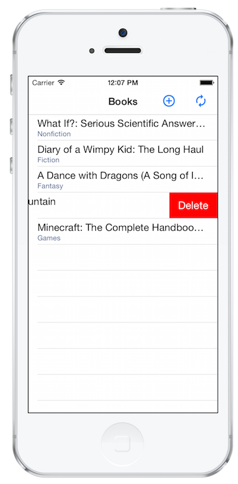

Duration
30 minutes
Goals
In this exercise, you will modify a basic Xamarin.Forms application shell to include support to hit an existing REST-based service and manipulate the returned data. The UI has been created already, you will be filling in the server access code.
Exercise Overview
Try to complete the exercise by using the following high-level instructions, and going into the step-by-step instructions if you need some guidance. Here are the basic steps you will perform:
- Open the starter application and add support for HttpClient and JSON.net. Go ahead and build the application to restore any missing Nuget packages, or restore them manually.
- System.Runtime
- System.IO
- System.Threading.Tasks
-
Update the
BookManagerclass in the Data folder that manages the connection to the web service. There are// TODO:comments to guide your work. Use the description below to design the methods to access and update the data. You will need a way to get, add, update and delete books from the service. -
Call
GET /loginto get a token (if you don't pass this token to the other methods, you'll get an Unauthorized status returned). This will create a unique session for your application and will populate the session with a few default books. - All other calls need to add the string-based token (with no quotes) as the "Authorization" header. This is what identifies you to the service. In addition, you should set the "Accept" header to "application/json".
- Call
GETto get a list of the books in your session. This will return a JSON array of books which have the shape:[ { "isbn":"1025801012", "title":"Answers to Absurd Hypothetical Questions", "authors":["Randall Munroe"], "publishDate":"2014-09-04T00:00:00+00:00", "genre":"Nonfiction" } ] -
Call
PUT /xxxxxto update a book, wherexxxxxis the ISBN code for an existing book with th JSON book as the body of the request. -
Call
DELETE /xxxxto delete a book, wherexxxxis the ISBN code for the book. -
Call
POSTto add a new book, with the JSON book as the body of the request, the ISBN code must be empty. This will return the JSON book with the ISBN code filled in. -
Open the starter project contained in the Part02 Resources folder and examine the project structure. It has four projects in the solution:
Project Description BookClient This is the PCL which contains all the code to create and process the UI for the application. You will do all of your work in this project. There are two Pageclasses in the project, one for the main view which shows aListViewfor the books, and a second to add or edit a specific book. This project will not run yet as it's missing some code which you will need to supply.BookClient.Droid This is the Android platform-specific project which hosts the app on Android. You can use this project to test the app on the Xamarin Android player or a real device. BookClient.iOS This is the iOS platform-specific project which hosts the app on iOS. Use this project if you are on a Mac. BookClient.WinPhone This is the Windows Phone platform-specific project which hosts the app on Windows Phone. Use this project if you are on Windows and have the SDK setup.
-
Add the following Nuget packages to the BookClient project and to any platform projects you intend to test with (iOS, Android and/or Windows Phone).
- HttpClient (this will also add two other dependencies from Microsoft).
- JSON.net
- You should be able to build the application, but do not attempt to run it yet as it has some unimplemented methods which throw exceptions.
-
Expand the Data folder. You will find two files inside.
- Book.cs is the object representation for a single book. The definition should match the JSON description above. It has public properties defined for each of the passed fields. JSON.net is smart enough to manage camel-casing vs. pascal-casing so you can name the properties with standard C# conventions, the key thing is that the names are spelled correctly.
-
BookManager.cs is the manager class which wraps the web service. It has stubbed out methods (with
NotImplementedExceptioncode) for each of the operations you need to implement. The UI already has code in place to call each of these methods.
-
In the data folder, open the class named
BookManager. This will be the class we add all our web service client methods into. -
Add a constant string to the class to hit the base URL. The value for the string should be
"http://xam150.azurewebsites.net/api/books/". -
Since we will need to do this authentication once, but then add the token into the header for all other request, we will create a single method to create our
HttpClientobject to access the service. This method will need to obtain the token once, but then return anHttpClient -
Add a new private field of type
stringto hold the authorization token. The completed lab names this field authorizationKey. -
Create a new private method in the class named
GetClientwhich returns aTask<HttpClient>. -
In the method, create a new
HttpClient. If the field is empty or blank, then call the base URL + "Login" to get the authentication token usingGetStringAsync. Store the retrieved token in your field so subsequent calls will use it. You will need to useasync / awaitfor this. -
The returning token will have quotes around it which need to be removed. The best way to do this is to use
JsonConvert.DeserializeObject<string>(...)so that it is properly deserialized. Just pass the authorization key in and save off the result. -
Finally, add two headers to the
DefaultRequestHeaderscollection - one for the token (under "Authorization") and the other to set the "Accept" type to be "application/json" and return the client object from the method.. -
In the BookManager.cs file, find the method named
GetAllwhich returns aTask<IEnumerable<Book>> -
Use your
GetClientmethod to retrieve aHttpClientto work with. -
Use
GetStringAsyncon the base Url to retrieve the array of books. You can use the C#async / awaitfeature to make this easy to consume - make sure you add theasynckeyword to the method definition. -
Pass the returned string into
JsonConvert.DeserializeObjectto turn the JSON data into an object graph and return it back to the caller. - Run the application and press the Refresh icon in the toolbar (at the top or bottom depending on the platform, but the icon looks like a pair of arrows in a circle).
-
After a few seconds, the app should load a set of existing books and display them. Debug through the application if you do not see the data get loaded. Verify it is properly calling Login and then passing the authorization token into the
GETcall to retrieve the books. -
Open the
BookManagercode and locate the method namedAddwhich takes a title, author and genre and returns aTask<Book>. -
In the method, create a new
Bookobject and populate the fields with the passed data:- Set the ISBN field to an empty string.
- Make sure to create a new
Listto hold the passed author (we only allow a single author here for simplicity, but you could expand this code if you like to allow for multiples using a comma separator or some other convention). - Set the
PublishDatetoDateTime.Now.
- Get a client from your
GetClientmethod. - Use the
PostAsyncmethod against the base URL to add the book.- You will need to turn the Book object into JSON using
JsonConvert.SerializeObject. - Create the
HttpContentfrom the JSON string by creating a newStringContentobject, use the constructor which also takes an encoding and media type. - The encoding should be
Encoding.UTF8and the media type should be "application/json".
- You will need to turn the Book object into JSON using
-
The response from
POSTwill be a JSON string represent the returned book. Go ahead and deserialize it back to aBookobject and return it from the method - use the code example fromGetAllif you need a little guidance. - Build and run the application to try the logic - just press the Add button (looks like a [+] in the toolbar). Debug through the logic if it's not working properly. When you press the Add Book button, it should add the book and return you back to the main screen.
-
Open the
BookManagerclass and locate the method namedUpdatewhich takes aBookand returns aTask. -
In the method implementation, get a new client and use the
PutAsyncmethod to send a JSON-encoded book to the base URL with the ISBN added to it.- So, if the ISBN is 12345678, then the URL would be
api/books/12345678.
- So, if the ISBN is 12345678, then the URL would be
-
In this case, we don't have an explicit return type - but we want to return
Taskso that exceptions are properly returned back to the caller, and so the caller can use theawaitkeyword to pause the progress of the method until the asynchronous method is finished. - Try out the logic by running the application and tapping on an existing book to edit it.
-
Open the
BookManagerclass and locate theDeletemethod which takes a string ISBN and returns aTask. -
In the method body, get a new client and use the
DeleteAsyncmethod against the base URL + the ISBN (just like theUPDATEcase). - Run the application to test the delete logic - you can get to the functionality by swiping to the left on iOS, or by performing a long-click on Android and Windows Phone (press + hold).
When you add HttpClient to your projects, Nuget will also add dependencies to a few other packages to provide compile-time dependencies against core BCL classes. There is a known problem with certain versions of the Nuget client which causes a build error in the Xamarin.iOS and Xamarin.Android projects when they have a reference to these build packages. The error message will say something similar to:
C:\Program Files (x86)\MSBuild\12.0\bin\Microsoft.Common.CurrentVersion.targets(1695,5): warning MSB3277: Found conflicts between different versions of the same dependent assembly that could not be resolved. These reference conflicts are listed in the build log when log verbosity is set to detailed. ...
To resolve this issue, remove the following references from the Xamarin.iOS and Xamarin.Android platform-specific project - leave the package, just delete the references from the References folder. You should be able to build at that point.
For more information on this error, see this MSDN blog post.
Book Service
The Book REST service is located at http://xam150.azurewebsites.net/api/books. Here are the valid operations you can perform:
Steps
Add HttpClient and JSON.net support
To start with, we will add support to access HttpClient and JSON.net. Recall that these are added using Nuget. We will add the packages to all the projects. We will need the HttpClient package in order to use the library from a Portable Class Library.
Examine the Book and BookManager classes
The service works with a set of books described in JSON. We've added a JSON parser (JSON.net), and have some code in the project for the object representation of the book.
Add support to login to the service
The service requires you login first and get an authentication token. For simplicity, we aren't using any credentials or certificates - but you must call a specific endpoint first and then take the result of that and return it on each subsequence request in the HTTP header.
public class BookManager
{
const string Url = "http://xam150.azurewebsites.net/api/books/";
private string authorizationKey;
private async Task<HttpClient> GetClient()
{
HttpClient client = new HttpClient();
if (string.IsNullOrEmpty(authorizationKey))
{
authorizationKey = await client.GetStringAsync(Url + "login");
authorizationKey = JsonConvert.DeserializeObject<string>(authorizationKey);
}
client.DefaultRequestHeaders.Add("Authorization", authorizationKey);
client.DefaultRequestHeaders.Add("Accept", "application/json");
return client;
}
...
}
Get the list of books
Now that we can authenticate to the service, let's add our code to retrieve the books from the base Url.
public class BookManager
{
...
public async Task<IEnumerable<Book>> GetAll()
{
HttpClient client = await GetClient();
string result = await client.GetStringAsync(Url);
return JsonConvert.DeserializeObject<IEnumerable<Book>>(result);
}
}
Add a new book
We are now displaying the books, let's add support to Add a new book using POST.
public async Task<Book> Add(string title, string author, string genre)
{
Book book = new Book() {
Title = title,
Authors = new List<string>(new[] { author }),
ISBN = string.Empty,
Genre = genre,
PublishDate = DateTime.Now.Date,
};
HttpClient client = await GetClient();
var response = await client.PostAsync(Url,
new StringContent(
JsonConvert.SerializeObject(book),
Encoding.UTF8, "application/json"));
return JsonConvert.DeserializeObject<Book>(
await response.Content.ReadAsStringAsync());
}
(Optional) Update an existing book
We are now able to display and add new books, if you have time left for the exercise, you can add the code necessary to update an existing book, or come back to this after the class.
public async Task Update(Book book)
{
HttpClient client = await GetClient();
await client.PutAsync(Url + "/" + book.ISBN,
new StringContent(
JsonConvert.SerializeObject(book),
Encoding.UTF8, "application/json"));
}
(Optional) Delete a book
The final operation (and easiest) we have is DELETE. If you have a little time left for the exercise, add the delete support, or come back to this after the class.
public async Task Delete(string isbn)
{
HttpClient client = await GetClient();
await client.DeleteAsync(Url + "/" + isbn);
}
Summary
You have successfully utilized a REST service within your Xamarin application. As a fun side exercise, try adding in an ActivityIndicator into the UI while you are loading the books. The completed solution has this code implemented through a Binding to the Page.IsBusy property if you'd like to just examine one way to accomplish this.